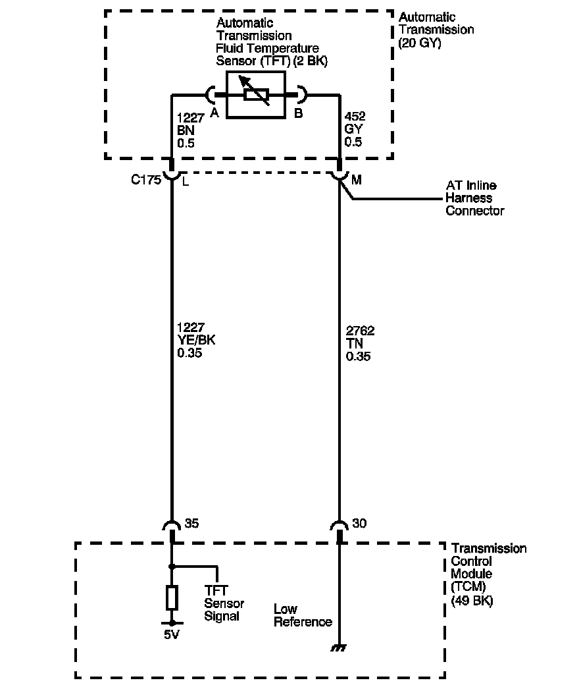

4L80-E / 4L85-E Automatic Transmission
DTC P0712

Circuit Description
The automatic transmission fluid temperature (TFT) sensor is part of the 4L80-E automatic transmission (AT) wiring harness assembly. The TFT sensor is a resistor, or thermistor, which changes value based on temperature. The sensor has a negative-temperature coefficient. This means that as the temperature increases, the resistance decreases, and as the temperature decreases the resistance increases. The transmission control module (TCM) supplies a 5-volt reference signal to the sensor and measures the voltage drop in the circuit. When the transmission fluid is cold, the sensor resistance is high and the TCM detects high signal voltage. As the fluid temperature warms to a normal operating temperature, the resistance becomes less and the signal voltage decreases. The TCM uses this information to control shift quality and torque converter clutch (TCC) apply.
If the TCM detects a continuous short to ground in the TFT sensor or signal circuit, then DTC P0712 sets. DTC P0712 is a type C DTC.
DTC Descriptor
This diagnostic procedure supports the following DTC:
DTC P0712 Transmission Fluid Temperature (TFT) Sensor Circuit Low Voltage
Conditions for Running the DTC
^ System voltage is 8-18 volts.
^ The engine is running for greater than 5 seconds.
Conditions for Setting the DTC
The TFT sensor indicates a temperature of 150° C (302° F) or greater for 12 seconds.
Action Taken When the DTC Sets
^ The TCM does not request the engine control module (ECM) to illuminate the malfunction indicator lamp (MIL).
^ The TCM commands increased line pressure.
^ The TCM freezes transmission adaptive functions.
^ The TCM determines a default TFT using the following matrix:
- If the engine run time is less than 60 seconds then default TFT equals 47° C (117° F).
- If ECT is less than 20° C (68° F), then default TFT equals IAT.
- If the ECT is 20-110° C (68-230° F) then default TFT equals ECT.
- If ECT and TFT DTCs are both set then default TFT is 140° C (284° F).
^ The TCM records the operating conditions when the Conditions for Setting the DTC are met. The TCM stores this information as Failure Records.
^ The TCM stores DTC P0712 in TCM history.
Conditions for Clearing the DTC
^ A scan tool clears the DTC from TCM history.
^ The TCM clears the DTC from TCM history if the vehicle completes 40 warm-up cycles without a non-emission related diagnostic fault occurring.
^ The TCM cancels the DTC default actions when the fault no longer exists and the DTC passes.
Diagnostic Aids
DTC P0712 defaults to an elevated line pressure condition which may result in partial TCC apply. This may produce an idle surge that could stall the engine.
Test Description
The numbers below refer to the step numbers on the diagnostic table.
2. A value greater than 150° C (302° F) indicates the fault is present. A value below 150° C (302° F) indicates the fault is intermittent.
3. A value less than -40° C (-40° F) indicates the fault is in the transmission side.
5. For resistance at other temperatures, refer to Transmission Fluid Temperature Sensor Specifications.